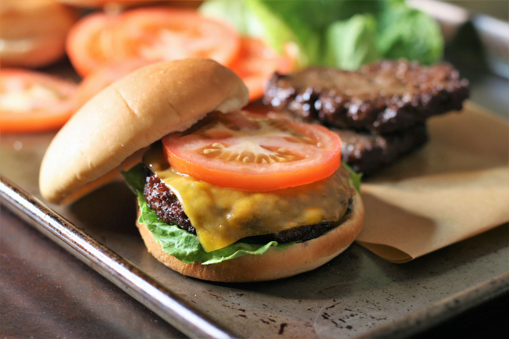

Air Fryer Hamburger Patties

Descriptions
Ingredients:
- 1 pound 80% lean ground beef
- 2 tablespoons melted butter
- 1 tablespoon beef base (such as Better than Bouillon)
- freshly ground black pepper to taste
Steps:
- Preheat an air fryer to 400 degrees F (195 degrees C).
-
Form beef into 4 patties, approximately 3/4 inches thick and 4 1/2
inches in diameter. Make the patties slightly bigger than the buns to
allow for shrinkage.
-
Whisk together warm melted butter and beef soup base in a small bowl.
Brush lightly onto both sides of patties and season with pepper. Set
patties into the air fryer basket. Depending on the size of your air
fryer, you may need to cook them in batches.
-
Air-fry patties for 7 minutes, flipping halfway through, for medium
doneness. For well done, air-fry for an additional 2 minutes.